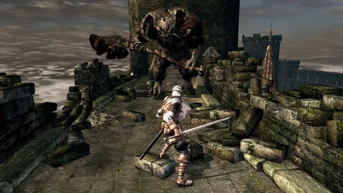
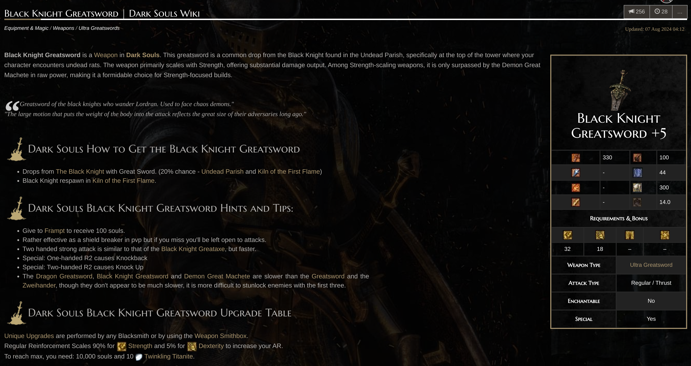
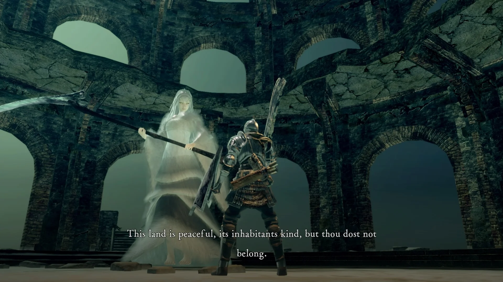
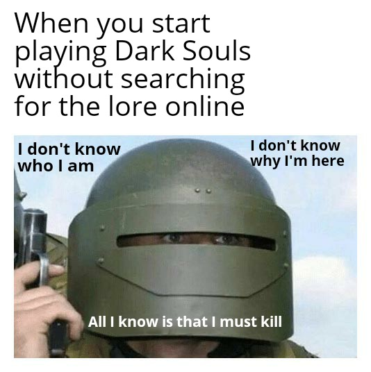

Dark Souls - 05/12/2024
Introdução
Dark Souls é certamente uma das minhas franquias favoritas - especialmente o primeiro jogo, por mais que ele seja mecanicamente "duro" pros padrões de hoje. Nesse post, vou falar sobre como conheci a série, minha experiência com Dark Souls 1 ao longo dos anos e vou brevemente comentar sobre o resto da série Souls
Veja bem, não estou aqui pra fazer uma review do jogo ou falar o quão importante e influente ele foi pra indústria. Eu sinceramente não ligo muito pra isso, e esse assunto já foi discutido e repetido inúmeras vezes por muita gente
Estou aqui pra falar sobre a minha experiência pessoal com o jogo


Eu lembro a primeira vez que ouvi sobre a série Souls. Eu devia ter uns 11-12 anos, ainda morava em Curitiba, e foi na casa de um amigo meu chamado Guilherme. Ele me falou sobre um RPG super difícil do PS3 chamado Demon's Souls
Nesse jogo, tinha boss que supostamente "te matava em um hit", lembro dele me falando como o selling-point do jogo era ser difícil
Eu acho que assisti à cutscene de abertura pelo YouTube na casa dele, e me lembro vividamente de ver o Tower Knight e achar ele muito legal
Mas eu não tive interesse imediatamente, achava que esse negócio de jogo difícil não era pra mim. Então, não passou disso, "ouvir falar"
Um tempo depois, eu ouvi sobre um tal de Dark Souls, uma "sequência espiritual" do Demon's Souls - que também era difícil. Novamente, eu não me interessei imediatamente, mas eventualmente uma cópia do jogo pra PS3 foi parar na minha casa
Naquela época, eu e meu pai usávamos um site chamado TrocaJogo, que servia pra, como o nome sugere, trocar jogos pela internet. Você cadastrava seu jogo e achava outras pessoas que tinham jogos que você se interessava. Vocês então podiam negociar e trocar mídia física
Curiosamente o site ainda existe em 2024, eu sinceramente não sei como. Jogos físicos são difíceis de se usar hoje em dia
Certamente foi numa de muitas trocas que o jogo acabou na minha mão. Eu não sei o que eu dei nele, mas não tenho dúvidas de que valeu muito a pena
Minha primeira experiência com o jogo
Eu tenho memórias vívidas da primeira vez que joguei ele. Isso é tão raro de se acontecer - geralmente quando eu gosto de um título, eu acabo jogando duas ou três vezes até ter o jogo bem gravado na minha cabeça. Um bom exemplo disso é Dead Space, que joguei algumas vezes
Mas esse não foi o caso do Dark Souls. Desde a primeira vez que joguei, ele me marcou de um jeito muito único
Eu me lembro de entrar na "sala" principal do asilo e o Asylum Demon cair na minha frente. Eu me lembro de tentar bater nele com a espada curta algumas vezes antes de notar que tinha uma porta aberta e fugir
Eu me lembro de voar no corvo e sair do tutorial pela primeira vez
Chegando em Lordran, eu falei com o Crestfallen Knight e segui meu caminho pro Undead Burg, que é a progressão natural do jogo. Eu lembro meu primeiro encontro com os esqueletos no cemitério, e como eles eram difíceis, claramente não pensados pra serem enfrentados no começo do jogo
Seguindo o burgo, eu eventualmente passei pelo Red Kite Dragon, e cheguei no Black Knight. Eu tentei várias e várias vezes o Black Knight
Eu acabei matando ele sem cheese, já que não sabia ficar spammando backstab. E nisso me aconteceu uma coisa muito curiosa: ele dropou a Black Knight Greatsword

Esse é um drop de 20% de chance de acontecer, e não existe farm, visto que o Black Knight não respawna. É claro que na hora eu não fazia ideia disso, e fui dar uma olhada nos status da arma
Eu não fazia ideia de como scaling funcionava, mas sabia que NÚMERO GRANDE = BOM - e a espada definitivamente tinha números grandes de dano 😄
A questão é que eu não podia usar ela. Ela exige 32 de força pra usar com uma mão, ou 22 pra usar com as duas
Eu não sei qual era minha força, mas tava longe do mínimo necessário. Nisso começou uma das coisas mais memoráveis dessa primeira gameplay - o farm de XP pra usar a espada do Black Knight.
Eu matei os pobres coitados dos inimigos do burgo dezenas de vezes, fiquei algumas horas subindo e descendo o burgo, lentamente matando todo mundo, coletando algumas
Até que eventualmente aconteceu, eu podia equipar a espada com duas mãos. Ela era muito melhor que a minha, e finalmente fui enfrentar o Taurus Demon
Com a arma nova em mãos, ele não foi muito difícil e rapidamente prossegui pro Undead Parish. Nessa altura do campeonato, eu já estava 100% investido no jogo
Dando um pequeno salto temporal, encontrei com o ferreiro Andre, lutei com as gárgulas... e desci o maldito elevador do Parish pra Firelink Shrine
Eu sei, eu sei. Toda santa review sobre esse jogo fala sobre esse maldito elevador. Mas não tem o que fazer, é extremamente memorável. Eu me lembro vividamente a primeira vez que desci ele e vi que estava em Firelink Shrine novamente
O jogo não tem mapa, eu jamais imaginaria que estaria de volta ali pegando um elevador. É claro que na época eu não pensava no "ÉPICO GAME DESIGN DO MIYAZAKI-SAMA ☝️🤓". Eu só achei bacana
Dali pra frente eu não me lembro a exata ordem de eventos, mas sei que rapidamente aprendi uma grande lição sobre a série Souls - NPCs ficam bravos pra sempre
Eu ataquei o Crestfallen Knight, nem sei por quê. Devo ter achado ele um inútil, bati pra ver o que acontecia
Veja bem, eu já tinha jogado Oblivion, e nele dava pra fazer os NPCs te perdoarem com o escudo. É algo como levantar e abaixar o escudo na frente deles
Ali não tinha isso. Não só ele tava bravo comigo, como ele era muito forte e ficava repetidamente me matando (eu era ruim, tava usando summon nos bosses) e ainda por cima eu respawnava logo na frente dele, fazendo ele me atacar imediatamente
Depois de algumas mortes, acabei derrubando ele num dos buracos ali da Firelink Shrine, e ele morreu. Essa se tornou outra memória incrível que tive dessa primeira experiência. Uma simples interação que teve consequências e me forçou a matar o NPC
Hoje eu sei que ele pode te perdoar, é só usar o padre da igreja pra pagar seus pecados - mas você acha que eu ia pensar nisso? hah
Segui com o jogo. Como comentei, naquela época eu não usava a internet pra interagir com a comunidade de jogos, não sabia que usar summon era mal visto, eu usava mesmo e não tava nem aí
Outra coisa interessante que aconteceu - eu fiz a ordem errada das áreas. Na verdade, eu zerei o jogo sem nunca passar pelos Depths
Isso porque quando eu explorei o Darkroot Garden depois do Andre, eu acabei achando o caminho lateral que leva pra Hydra, e com isso achei a caverna que levava pro Valley of Drakes
Eu não sei como, mas eu tinha muita paciência. Eu matei todos os dragões no meu caminho e desbloqueei o caminho pra Firelink Shrine novamente. Com isso, eu entrei em Blighttown "por trás", pulando toda uma área do jogo e um boss
Isso não foi intencional, e sei que não é o caminho que a maior parte das pessoas faz pelo jogo, mas por conta dessa experiência, até hoje os Depths me parecem uma área estranha, alienígena
Sempre que jogo novamente faço esse mesmo caminho, e quase nunca passo pelo Gaping Dragon
Seguindo adiante, Blighttown é uma experiência. Eu sofri bastante, mas a área não é longa o suficiente pra ser um pé no saco (diferente do pântano do Demon's Souls). Curiosamente, eu explorava bem o suficiente pra achar as DUAS paredes invisíveis e descer pro Ash Lake
Lutei contra a Quelaag, toquei o sino
Em algum momento durante minha gameplay, eu fiquei sabendo que dava pra voltar pro asilo. Eu realmente não sei como, mas eu acabei recebendo essa informação de algum lugar, provavelmente por acaso na internet
Nisso eu fui atrás de pesquisar, me lembro que vi um vídeo no YouTube de como fazer, e nessa eu peguei a boneca
Eu nem sabia do Painted World, mas por sorte já estava com a boneca e acabei entrando na pintura quando tava explorando Anor Londo
Desde aquela primeira gameplay até hoje, eu nunca escolhi lutar contra a Priscilla. Acho que foi a única coisa que nunca fiz nesse jogo, e me recuso a fazer. Sou gadinho pela Priscilla, nunca matarei-a!

Seguindo o jogo, passei pela Sen's Fortress, cheguei em Anor Londo (é claro que me lembro da primeira vez que as gárgulas me levaram pra cidade). Lutei contra o Gordo e o Magro®️, e cheguei na nossa peituda favorita.
Como é? Não vou falar sobre o Ornstein e o Smough? Veja bem, como já comentei, eu não interagia com a comunidade de nenhuma forma. Eu rapidamente derrotei eles com ajuda de summons e, sinceramente, a luta não me marcou num um pouco, infelizmente
Hoje lamento um pouco o fato de usar summons, mas eu não sei se teria a perseverança pra lutar contra todos os bosses sozinho, ainda mais com minha build horrível (eu ainda não entendia scaling, afinal, o jogo nunca para pra explicar direito)
Com o Lordvessel em mãos, cheguei na segunda metade do jogo.
Eu odeio quando as pessoas falam que o primeiro Dark Souls tem uma "segunda metade" ruim. Geralmente as pessoas estão se referindo a Lost Izalith e Demon Ruins
Mas eu não sei que jogo essas pessoas jogaram que essas áreas representam 50% do jogo
Não, a segunda metade do jogo não é ruim. A biblioteca do Seath é ótima - me lembro da primeira vez que andei pelas pontes invisíveis na caverna de cristais, com ajuda das mensagens da comunidade
E explorando a parte escura das Catacumbas. Muita gente não gosta dessa parte, mas eu acho ela curta o suficiente pra não incomodar - bem como o runback pro Nito. Ele é bem fácil, você não vai ficar repetidamente fazendo o runback. Mesmo sem summons, ele dificilmente vai levar mais de três tentativas se você jogar direito
Agora de fato, Lost Izalith e Demon Ruins são áreas ruins. Bed of Chaos é o pior boss do jogo - mas por sorte eu não me lembro de sofrer muito na primeira vez. Eu devo ter caído uma ou duas vezes só
E antes de perceber, estava na Kiln of the First Flame. Matei o Gwyn, reacendi o fogo e... acabou.
Eu nem sabia que ele era o final boss (eu desconfiava pelo tom da área), aliás eu não sabia de nada
O jogo não é de jogar o lore na sua cara. Eu zerei exatamente dessa forma:

Mas foi uma experiência incrível, única. Isso que estou contando são memórias da primeira vez que joguei, mais de dez anos atrás. E ainda me lembro como se fosse ontem
Esse jogo é, sem sombra de dúvidas, uma obra-prima
Experiências subsequentes
Depois de zerar o jogo, assim como todos os outros, eu parei e parti pra outra
Mas Dark Souls nunca saiu completamente da minha vida, graças ao YouTube
Volta e meia eu recebia uma recomendação de uma challenge run. Eu até sei qual foi a primeira que vi, ou pelo menos a primeira que me chamou atenção
Era uma run com apenas escudos, e foi provavelmente a primeira vez que ouvi falar em challenge runs
Eu... não assisti ao vídeo, só achei curioso
O tempo foi passando, fui vendo mais e mais runs similares, até que eventualmente mordi a isca e virei um grande fã de challenge runs (sendo The Backlogs um dos melhores canais pra isso)
Até hoje assisto, e isso me faz nunca estar 100% desconectado da série
Uns bons anos depois, ali por 2020, eu acabei comprando o jogo remasterizado no Nintendo Switch e zerando ele novamente
Ali foi a primeira vez que joguei a DLC, inclusive. Muito boa, mas não é minha parte favorita do jogo, é meio que igual os Depths, uma área que não fez parte da minha primeira gameplay, então é um pouco alienígena
Depois disso, joguei o jogo mais algumas vezes, tanto no Switch quanto no PlayStation. Nunca mais joguei a versão original, ficando só na remasterizada
Aprendi a fazer bugs, e até tentei fazer umas speedruns - mas isso foi no Switch ainda, e como o jogo roda a 30 FPS, nem todos os skips eram possíveis (MALDITO ELEVADOR DE ANOR LONDO), então perdi a motivação
Mas um dia aconteceu - eu estava numa tarde de trabalho chata, então resolvi abrir o YouTube e pesquisar "Dark Souls lore"...
Eu não sei qual foi o vídeo que vi, mas ele tinha por volta de uma hora
Isso mudou pra sempre minha percepção do jogo
O jogo não era só bom, ele tinha uma história incrível
Algo que nem os outros Dark Souls, nem Elden Ring ou Sekiro ou Bloodborne conseguiram replicar
Pra mim, a história e worldbuilding do Dark Souls 1 são perfeitos. A história é incrivelmente interessante e me deixou ainda mais amarrado e cativado pelo jogo
Foi aí que decidi que, de fato, o primeiro era meu jogo favorito
A partir desse momento, além de challenge runs, comecei a consumir conteúdo sobre lore e teorias no YouTube, zerei canais como VaatiVidya, vi tudo que tinha pra ver sobre o assunto
Dali pra frente, sempre que jogava novamente o jogo, ficava prestando atenção nas estátuas, nos lugares, nos inimigos. Me lembrando do lore e por que as coisas eram do jeito que eram
Perdi a conta de quantas vezes joguei o jogo, fiz todos os tipos de builds
A única build que não gostei de fazer foi de mago. Eu não sei como as pessoas gostam de jogar de mago em Soulslike, eu acho surpreendentemente chato
Prefiro jogar de guerreiro, ou com escudo e espada, ou com arma de duas mãos
A única vez que tentei uma challenge run foi quando tentei jogar sem subir de level com um amigo meu, o Leonardo
Começamos pela tarde, fomos bebendo, e ali pela madrugada a gente estava no Ornstein e Smough
Infelizmente já estávamos muito bêbados e não conseguimos ganhar
Fui dormir e quando acordei, o Leo tinha caído na tentação e subido de level pra derrotar os dois (usando bug de duplicação de alma)
O engraçado é que mesmo assim ele não conseguiu 😄 E ainda invalidou nossa run
Nunca mais tentamos, mas sei que é só uma questão de tempo pra uma segunda tentativa
E os outros jogos?
Como comentei, vou falar brevemente sobre os outros jogos da série
Quando Dark Souls 2 saiu, eu tava muito animado. Meu pai comprou o jogo pra mim no lançamento, coloquei no Play e joguei até a hora de dormir
Eu gostei do jogo, pra mim era Dark Souls 1 melhorado
Joguei, zerei, e nunca mais tive interesse em jogar novamente
Veja bem, eu não acho o jogo ruim e tenho vontade de fazer outra run um dia
Mas o jogo não foi muito marcante pra mim, tanto que me lembro muito vagamente dessa minha gameplay
Acho que o que mais me lembro foi morrer várias vezes pro Pursuer
Eu também gostava de invadir as pessoas. Certamente foi o jogo da série que mais aproveitei o PVP
E lembro de achar o final boss uma porcaria. Até hoje nunca joguei as DLCs
Quando saiu o Dark Souls 3, novamente eu me animei, e novamente comprei no lançamento
Esse já foi bem melhor que o 2, e quando joguei tinha certeza de que era meu jogo favorito
Lembro de farmar um Black Knight que ficava respawnando num pântano até ter o set completo dele
Também lembro de farmar os Silver Knights de Anor Londo, e de morrer inúmeras vezes pro Pontiff Sulyvahn
Essa já foi uma experiência muito mais memorável
Mas assim como o 2, acabei nunca jogando novamente. Tenho vontade, afinal eu também não zerei as DLCs
Sobre Bloodborne - eu gostei muito do jogo e acho que zerei duas vezes seguidas
Mas infelizmente a comunidade do jogo me repeliu um pouco
Eu não gosto quando a comunidade de uma franquia endeusa demais um único título, e vira um verdadeiro circlejerk
Exemplos: Super Smash Bros Melee, Fallout: New Vegas & Bloodborne
São todos jogos que joguei, gostei, e não tenho muita vontade de jogar hoje por não querer me associar com os fãs desses títulos 😅
Também tem o Demon's Souls. Eu nunca joguei o original, mas joguei o remake no PS5
Eu sei, eu sei, muita gente acha ele inferior ao original, mas sinceramente, não ligo o suficiente pra tentar jogar o de PS3
Acho que isso mostra meus sentimentos sobre o jogo
Mesmo assim, joguei umas duas vezes, e mais uma vez com um amigo meu
Ele achou o melhor Souls, mas eu acho talvez melhor que o 2 apenas
Infelizmente eu não conseguia jogar sem comparar com o Dark Souls 1. Muitas áreas são similares (tipo o pântano), mas a versão do Dark Souls é muito superior (tipo o pântano)
E os bosses são em sua maioria muito fracos e fáceis
Os únicos que me marcaram foram a Maiden Astrea/Garl Vinland e a Fool's Idol
A Maiden Astrea é um ótimo conceito - eu me senti mal de verdade por ter que matar ela e o Garl
E a Fool's Idol foi legal pois eu realmente não sabia da gimmick, e descobri completamente sozinho. O voilà de descobrir o que fazer foi muito satisfatório
Sekiro, por fim, é meu segundo jogo favorito da From Software. O jogo é uma obra de arte, e certamente chega perto do Dark Souls 1 pra mim, talvez até seja tão bom quanto
Em gameplay não se fala, Sekiro é simplesmente o melhor Action RPG da história
Mas sofre um pouco com uma história OK e falta de builds
Mesmo assim, já zerei umas 3 vezes e volta e meia tenho vontade de jogar novamente. Acho que um dia vou fazer um post só sobre ele, talvez se conseguir fazer a Jornada Mortal
Conclusão
É isso, isso era o que tinha pra falar sobre Dark Souls, um jogo que me marcou muito, e que não tenho dúvidas de que ainda vou jogar muito na minha vida
Eu realmente espero que façam um remake dele assim como fizeram do Demon's Souls, o que eu não daria pra ver o jogo explodindo de atividade online novamente! Dessa vez eu vou invadir 😈